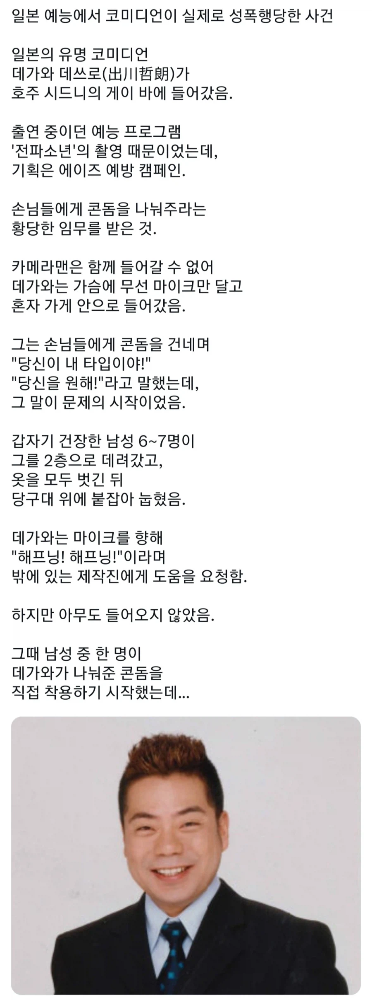
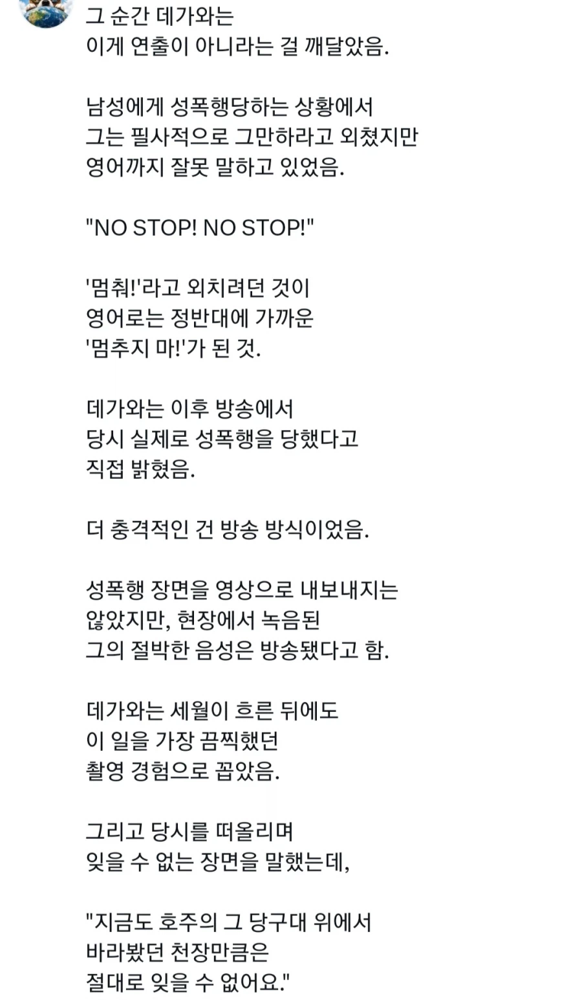
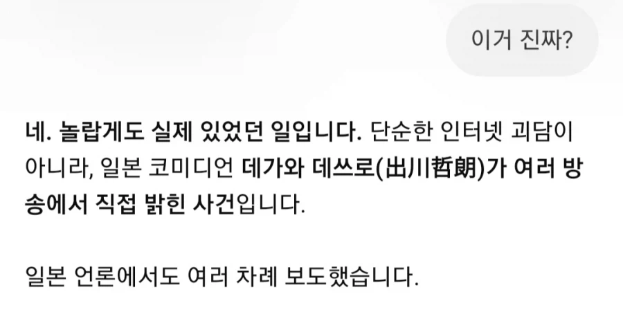
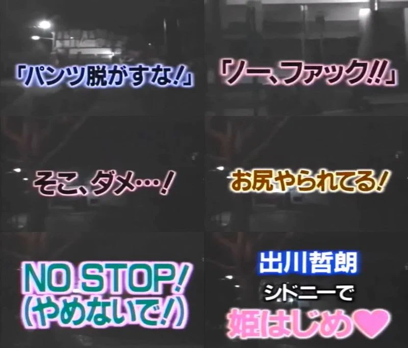

이게 진짜라고?ㄷ
심지어 이걸 방송에 내보냈다고??




닭이 치킨집에 기름을 팔러 왔다니까요
ㅅㅂㅋㅋㅋㅋ 한방에 이해가 되넼ㅋㅋㅋㅋ
뭐야 그럼 당하는 동안 아무도 도와주러 안왔다고?
ㄹㅇ 뭐임?
까지가 설정이 아니고...? 진짜로???
No (멈추지마) Stop! (제발!)
악 악 제발 멈추지마!
일본은 어마어마하다
NO STOP!! (감사합니다! 멈추지 말아주십시오!!)
연출쪽에서 시켰을듯 ㅋㅋㅋ
1990년대 일본의 전설적인 예능 방송인 '나아가라! 전파소년'에서, '에이즈 STOP'이란 에이즈 캠페인 일환으로 호주의 게이바에 개그맨 데가와 테츠로를 들여보내서 콘돔을 나눠주게 하는 기획을 촬영했음. 해당 게이바 손님들과 아무런 사전 협의 없이 촬영되었는데, 데자와가 게이 손님들과 대화하다가 이들을 유혹하는 상황이 되어버렸음. 사태가 심각해지자 데가와는 도망치려 했지만 결국 현장에 있던 손님들에게 잡혀 강간을 당해버리는 사건이 일어남.
실제 방송에서는 해당 장면은 나오지 않고 데가와의 음성만 나왔는데, 당시 방송에 나간 데가와 테츠로의 음성은 "야바이, 엉덩이 야라레테루!(ヤバイ、お尻ヤられてる！ / 위험해, 엉덩이 당하고 있어!)" 였다고 함. (참고로 이 사람의 트레이드마크인 유행어가 "야바이요 야바이요!(ヤバイよヤバイよ！)"인데, 뭔가 위험하고 무서운 상황이나 망신을 당했을 때, 뜨겁거나 짠 음식을 먹었을 때 주로 함)
당시 급박한 상황에서 영어로 "STOP" 이라고 외쳤어야 하는데, 영어에 서툰 데가와가 당황한 나머지 "NO STOP"이라고 외쳐서 게이들이 멈추지 않고 계속했다는 얘기도 있음. 데가와는 이후 "정말 무서워서 천장만 바라보고 있었다", "수치스럽고 억울했던 기억"이라고 회고했음.
당시 스태프들은 데가와의 비명이 방송용 연출이나 해프닝인 줄 알고 한동안 구조하지 않고 방치했다고 하며, 항간에는 스탭들이 '분명 일부러, 그게 더 재미있으니까' 일부러 도와주지 않았다는 얘기도 있음. 항간에는 삽입되기 전에 추행 단계에서 스태프들이 구했다는 얘기도 있는데 데가와는 당시 '상당한 통증을 느꼈다'는 취지로 이야기한 것을 봐서는 제작진이 사건을 축소하기 위해 지어낸 얘기일 확률이 있음.
놀랍게도 이 사건으로 제작진은 아무런 징계가 없었음. 또한 방송에서 공식 사과를 하거나, 데자와에게 사과를 했다는 기록도 없음. 강간 가해자들도 고소를 당하지 않았다고 함. 당시 90년대 일본 예능은 가학과 극단성이 절정을 이룰 때라 자극적 소재 중 하나일 뿐이었고, 또한 당시엔 미디어 윤리 심의 기구도 없어서 제재할 수 있는 수단도 없었음. 또한 데가와 테츠로 본인 역시 당시에는 가학적 리액션 전문 개그맨의 입지 때문에 제작진이나 가해자들을 고소하지 않았다고 함.
오히려 일본 방송사들은 사건이 일어난지 20년 후에까지 데가와를 불러서 '재미있는 에피소드' 라며 방송 소재로 써먹고 있음. 해당 사건은 명백한 범죄 피해 상황이자 방송사의 심각한 인권 침해 및 안전 관리 의무 위반에 해당하고, 예능이라는 명목하에 출연자의 인권을 심각하게 침해한 대표적인 방송사고 중 하나임.
이 '나아가라! 전파소년' 프로그램은 그밖에도 여러 가학적으로 출연자들을 괴롭히는 걸로도 악명이 높았는데 대표적인게 개그맨 지망생인 하마츠 토모아키를 '연구 대상으로 선정되었다' 라고 속인 후 1년 넘게 알몸으로 감금하고 그 실황을 방송으로 내보내는 악랄한 방송을 하기도 했음. 결국 문제가 심각해지자 정부에서 나서서 닛폰 테레비를 압박, 2002년 종영시킴.
여담으로 일본의 BPO(방송윤리프로그램향상기구) 는 2003년 만들어짐. 그러니까 데가와 사건 때는 방송 심의 기구 자체가 없었다는 얘기임. BPO 역시 심의를 거쳐 방송 윤리 위반 여부를 결정하지만, 우리나라 방심위 같이 법적 강제력이나 벌금, 과징금 부과 권한은 없음. 대신 "방송 윤리상 문제가 있다"는 '권고'나 '의견'을 공표할 뿐임. 다만 BPO의 지적을 받으면 방송사 이미지와 광고협찬에 타격을 받기는 한다고 함.
저기까지 템플릿아님? 방송내보내고 아무도안도와준거면
콘돔 써주긴 했겠지?